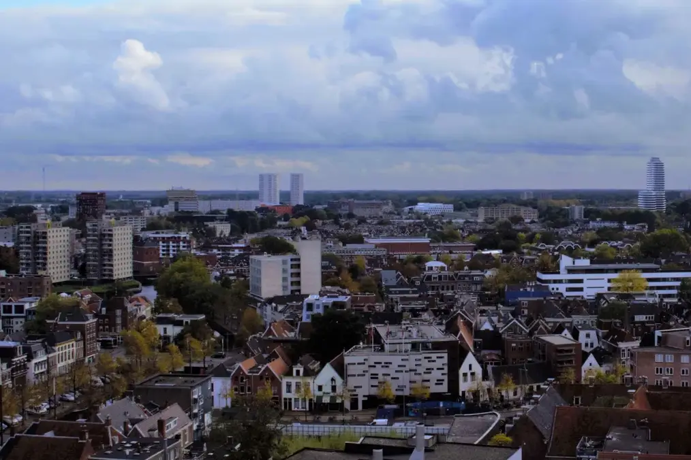

Duurzaam aan de slag
De inrichting van onze openbare ruimte is onderhevig aan compromissen, een integrale benadering is daarom belangrijk.
Ik ga voor duurzame keuzes bij onderwerpen als hittestress, groengebruik, menselijke ontmoeting en inrichting.
Duurzame (stads)ontwikkeling
